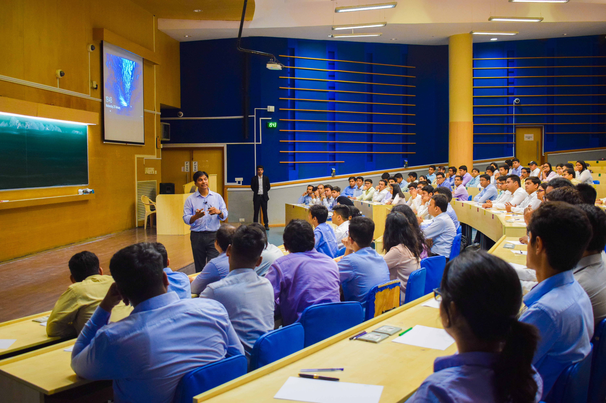
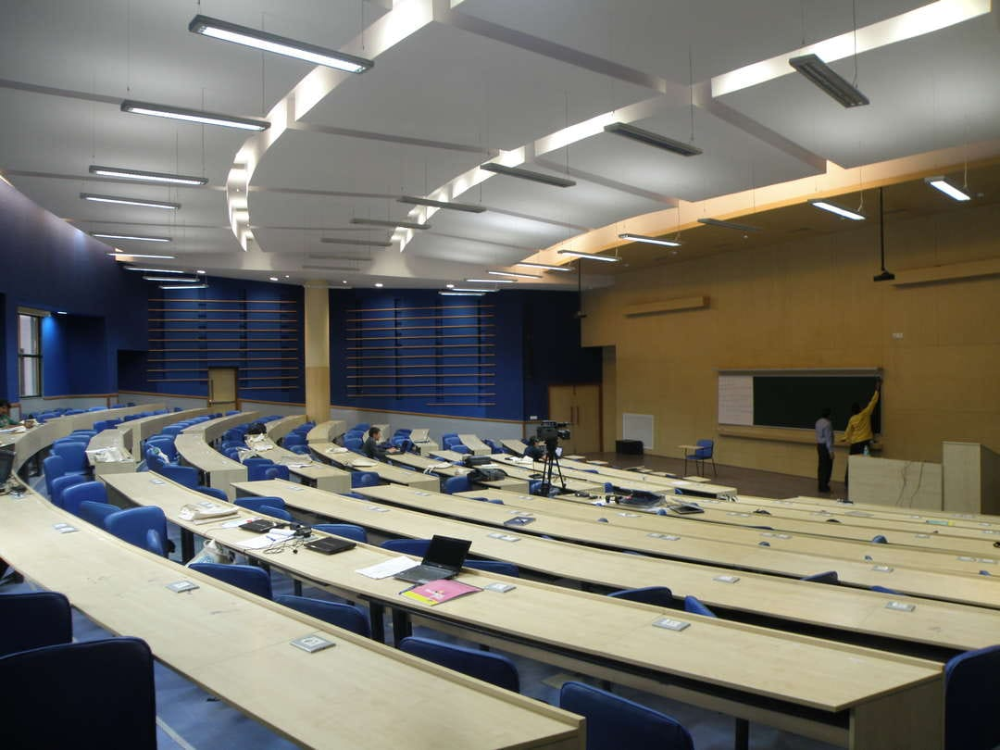
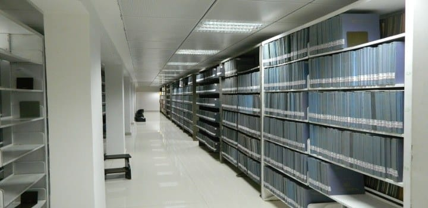
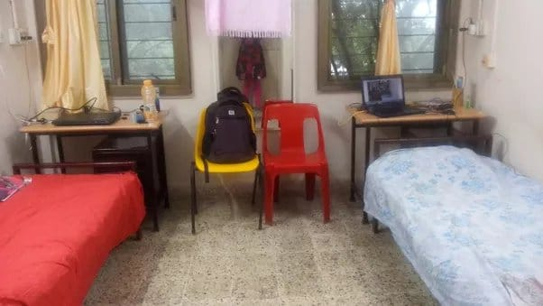
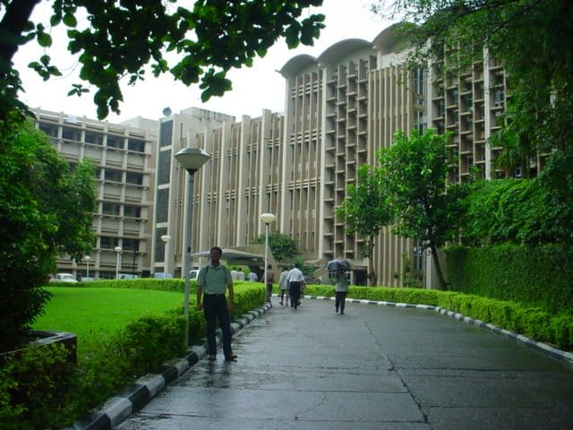

- We’re on your favourite socials!


IIT Bombay Expert's Review and Verdict
The Indian Institute of Technology Bombay (IIT Bombay), founded in 1958, is one of the world's top technological institutes. It was India's second IIT and the first to be created with foreign help, using funds from UNESCO supplied by the Soviet Union. IIT Bombay is well-known for its excellent teachers and students. For its undergraduate, postgraduate, and doctorate programmes, it attracts the brightest students from around India. The research and academic programmes of the institution are directed by its professors, many of whom are globally recognised for their contributions. IIT Bombay has played a significant role in India's technological development. Its alumni have become leaders in industry, academia, and government. The institute is also a major hub for innovation and entrepreneurship.
Sadly, things are not as rosy as they seem on the surface, even for an institution like IIT Bombay, an education pilgrimage for most aspirants. The college has its own set of challenges. Due to the rigid curriculum and high expectations, students at IIT Bombay frequently endure enormous academic pressure. Students may experience stress, anxiety, and mental health concerns as a result of the competitive environment. Students are frequently subjected to immense pressure from society and family to achieve well academically, which can have a negative impact on their mental health and well-being. Also, incidents like a canteen worker at IITB being arrested for trying to record a female student while she was using the girls' hostel's washroom really broke our hearts and made us question the reputation of the institution.
Here's our take on an open and honest look at life at IIT Bombay, so students can consider the advantages and drawbacks before making a sound decision.
IIT Bombay Rankings: The Mark of Excellence!
The following table shows the NIRF overall and Engineering category rankings of IIT Bombay over the past 3 years:
|
Year/Body |
2023 |
2022 |
2021 |
|---|---|---|---|
|
NIRF India Rankings - Engineering Category |
3 |
3 |
3 |
|
NIRF India Rankings - Overall |
4 |
3 |
3 |
IIT Bombay International Rankings
- QS WUR 2024: IIT Bombay ranks #1 in India and #149 in the world.
- The institute has been ranked #583 in Best Global Universities Rankings 2023, #125 in Best Global Universities in Asia 2023 and #3 in Best Global Universities in India 2023.
- Outlook India ranked IIT Bombay #3 among government engineering colleges in 2022.
Our Take:
IIT Bombay is a leader in STEM education in India. It offers a wide range of undergraduate and postgraduate programs in science, technology, engineering, and mathematics. According to the most recent QS World University Rankings, IIT Bombay has become the second Indian university to rank among the world's top 150 universities. The institute advanced 23 places from its 172nd ranking last year to 149th this year.
This is a significant accomplishment for IIT Bombay and demonstrates the institute's strength in education and research. It is today one of the world's most renowned institutions, and its alumni are highly sought after by companies all around the world. The QS World University Rankings are one of the most respected university rankings in the world. They are based on a number of factors, including academic reputation, employer reputation, citations per faculty, and international faculty ratio.
IIT Bombay Academia & Batch Size
IIT Bombay awards degrees to about 1,000 students each year. The campus is home to almost 6,000 individuals at any given time, including students, academics, and non-academic personnel.
Courses Offered
IIT Bombay offers a wide range of courses at the undergraduate, postgraduate, and doctoral levels. The institute is known for its high-quality education and research in science, technology, engineering, and mathematics (STEM). However, IIT Bombay also offers courses in the humanities and social sciences, design, and management. Here is a list of the degree programs offered by IIT Bombay:
- Bachelor of Technology (B.Tech)
- Bachelor of Sciences (B.Sc)
- Dual Degree (B.Tech and M.Tech in 5 years)
- Master of Science (M.Sc)
- Master of Technology (M.Tech)
- Bachelor of Design (B.Des)
- Master of Design (M.Des)
- Master of Business Administration (MBA)
- Master of Philosophy (M.Phil)
- Doctor of Philosophy (PhD)
Our Take:
Students from all over India come to IIT Bombay to pursue their chosen field of study. The institute's technical programs are particularly popular, but the humanities and social sciences programs are also highly regarded. IIT Bombay courses are demanding and require hard work and extensive research. However, if students are passionate about their chosen field of study, they will enjoy the hard work and research. Otherwise, they may find them burdensome.
Departments, Centres, and Schools
IIT Bombay has 15 academic departments, 36 multi-disciplinary centres, 3 schools of excellence, and 4 interdisciplinary programmes. The academic departments at IIT Bombay include:
- Aerospace Engineering
- Biosciences and Bioengineering
- Chemical Engineering
- Chemistry
- Civil Engineering
- Computer Science & Engineering
- Earth Sciences
- Electrical Engineering
- Energy Science and Engineering
- Environmental Science and Engineering (ESED)
- Humanities & Social Science
- Mathematics
- Mechanical Engineering
- Metallurgical Engineering & Materials Science
- Physics
Our Take:
This indicates that IIT Bombay is a large and comprehensive university with a diverse set of academic programmes. The institution is dedicated to teaching and research excellence, and it provides students with numerous chances to study and grow. IIT Bombay is also a pioneer in the fields of innovation and entrepreneurship. The multidisciplinary centres and interdisciplinary programmes at the university inspire students to think creatively and come up with answers to real-world challenges. IIT Bombay alumni are in high demand by businesses worldwide, and they make major contributions to society.
Batch Size
The average batch size of students at various levels of study at IIT Bombay is as follows:
- Undergraduate: 120-150 students per batch
- Postgraduate: 60-80 students per batch
- PhD: 20-30 students per batch
Our Take:
As per our research, IIT Bombay students have conflicting views regarding the batch size. Some students say that the big batch size makes getting to know their peers and lecturers difficult. Other students say that the big batch size allows them to engage with their classmates and learn from diverse viewpoints.

IIT Bombay Infrastructure
IIT Bombay is a popular choice among engineering students not just for its advanced academics and curriculum, but also for its modern campus. The campus is surrounded by lush nature and features unique services such as banks, a retail centre, two great elementary schools, a well-equipped hospital, hostels, contemporary libraries, and more.
- Classrooms: IIT Bombay has a well-developed classroom infrastructure. The classrooms are spacious and well-equipped with modern teaching aids, such as projectors, whiteboards, and computers. However, students demand some improvement and renovation of older classrooms and the improvement of acoustics in some classrooms.

- Library: IIT Bombay's library is one of the best in India. It is a huge and extensive library with a diverse collection of books, periodicals, and other resources. The library also has current technologies, such as online databases and e-books.

-
Medical/Hospital: The campus houses a hospital that provides general and speciality treatment to students, employees, and faculty members.
-
Gym: Within the campus grounds is a contemporary gym. It enables students to exercise and stay in good shape. The gym has been modernised and updated.
-
Sports Complex: IIT Bombay has a sports complex with facilities for a wide range of sports, including athletics, swimming, basketball, cricket, football, and hockey. The institute's Sports Council plans and organizes all sporting events and tournaments, both inter-collegiate and intra-collegiate. For cycling enthusiasts in and around IIT Bombay, the Cyclothon is organized in collaboration with the Fit India Movement.
-
Cafeteria: IIT Bombay has a variety of dining options, but Gulmohar Restaurant is one of the most popular choices for students, faculty, and visitors alike. It offers a wide range of vegetarian and non-vegetarian dishes in a relatively formal setting.
-
Guest Room/Waiting Room: IIT Bombay's guest house is a great place to stay if you're visiting the campus. It consists of two vihars, Jalvihar and Vanvihar, as well as faculty apartments and guest services. The vihars offer a variety of room types, including double bedrooms, suites, and family rooms. All rooms are neatly furnished and air-conditioned, and they come with a variety of amenities, such as a computer kiosk, seminar halls, WiFi, LAN connectivity, and laundry service.
-
Hostels: IIT Bombay provides on-campus housing for students in boys and girls hostels. The hostels are well-furnished (bed, chair, study table and cupboard) and offer a comfortable stay to students. The hostels of IIT Bombay strive to create a home-like environment for students. Hostel rooms are furnished and ventilated, and for the safety of girls, 24/7 surveillance is provided at girls' hostels. All basic facilities are available at both boys' and girls’ hostels.
|
IIT Bombay Hostel Fee Component |
Charges |
|---|---|
|
Medical Fee |
INR 1,950 |
|
Hostel Rent |
INR 2,600 |
|
Electricity and Water charges |
INR 3,850 |
|
Hostel Establishment charges |
INR 3,850 |
|
Mess Establishment charges |
INR 2,000 |
|
Hostel Amenities Fund |
INR 1,500 |
|
Mess Security Deposit (One-time) |
INR 3,000 |
|
Total |
INR 18,750 |
|
Per Semester Mess Advanced |
INR 22,000 |

Our Take:
Students at IIT Bombay are generally satisfied with the infrastructure of the institute. They appreciate the wide range of facilities that are available to them, as well as the quality of the facilities. However, some students have expressed concerns about the condition of some of the older buildings on campus and slow WiFi connectivity on campus. Aside from that, some students have expressed concerns about the condition of some of the older hostels, the lack of space in some hostels, and the limited number of washing machines and other appliances.
IIT Bombay Placements and Internships
IIT Bombay's Training and Placement Office (TPO) is responsible for conducting the placement and internship process for all students. The TPO works tirelessly with officers, staff, and students to ensure a smooth and structured process.
Placements
During the 2022-2023 placement season, recruiting firms made a total of 1,898 job offers to students, of which 1,516 were accepted. The highest domestic package offered was INR 1.68 crore per annum, and the highest international package offered was INR 3.67 crore per annum. Here is a brief overview of the IIT Bombay placement statistics:
|
Particulars |
Stats |
|---|---|
|
Students Registered for Placements |
2174 |
|
Students Participated in Placements |
1845 |
|
Number of Companies Participated |
384 |
|
Total Number of Job Offers |
1898 |
|
Number of Accepted Offers |
1516 |
|
Number of Pre-Placement Offers |
300 |
|
Pre-Placement Offers Accepted |
194 |
|
Job Offers above INR 1 crore Accepted |
16 |
|
International Job Offers Accepted |
65 |
|
Highest International Salary |
INR 3.67 Crore |
|
Highest Domestic Salary (C.T.C.) |
INR 1.68 crore |
|
Average Salary Package of Selected Students |
INR 21.82 LPA |
|
Top Recruiting Sector |
Engineering & Technology |
Our Take:
IIT Bombay students have reason to celebrate, as the placement percentage and median salary have both increased significantly this year. The placement percentage has increased by 11.63%, and the median salary has increased by 20.21%. This implies that students have an even higher chance of landing a high-paying job after graduation. Students may also expect to make more money in their early jobs when the median pay rises.
Overall, we have found that IIT Bombay students are typically happy with the placement process. They value the TPO's efforts to bring top-tier firms to campus and give students with the resources they require to thrive. However, for some students, the placement process can be stressful and difficult.
Internships
Internships are not required for IIT Bombay students. Internships, on the other hand, are highly recommended since they give students useful job experience and help them enhance their skills. The institution also provides a variety of tools and assistance to students in their search for internships. IIT Bombay's TPO has a specialised team that works on internships. The team assists students in finding internships via a range of avenues, including:
- Industry partnerships
- Online job portals
- Career fairs
Our Take:
According to our research and knowledge, the TPO at IIT Bombay makes every effort to give students the assistance they require to apply for internships. This includes assistance with resume and cover letter writing, as well as interview preparation. Aside from the TPO, a variety of other departments and organisations at IIT Bombay provide internship opportunities for students. For example, IIT Bombay's research laboratories provide students with research internships. Internship opportunities can also be found through student groups and organisations.
Course-wise & Sector-wise Placements at IIT Bombay
- Course-wise: IIT Bombay students achieved an impressive placement rate of 82% in the 2022-2023 placement season. The following table provides a course-wise breakdown of the placement results:
|
Programmes |
Registered |
Participated |
Placed |
Percentage Placed |
|---|---|---|---|---|
|
B.Des |
23 |
12 |
7 |
58% |
|
B.Sc |
57 |
43 |
39 |
90% |
|
B.Tech. |
791 |
679 |
598 |
88% |
|
Dual Degree (B.Des + M. Des) |
10 |
9 |
8 |
88% |
|
Dual Degree (B.Tech + M.Tech) |
215 |
187 |
178 |
95% |
|
M.Des |
76 |
63 |
39 |
61% |
|
M.P.P |
12 |
9 |
6 |
66% |
|
M.Phil |
214 |
159 |
110 |
69% |
|
M.Sc |
583 |
532 |
479 |
90% |
|
M.Tech |
166 |
131 |
41 |
31% |
|
Others |
27 |
21 |
11 |
52% |
|
Grand Total |
2174 |
1845 |
1516 |
82% |
- Sector-wise: Placements are available at IIT Bombay in a range of fields/sectors, including analytics, data science, design, research, consulting, finance, banking, and services. Companies that hire from IIT Bombay provide students with opportunities to study extensively, travel the world, and experience varied work cultures.
|
Sector |
Number of Offers |
Number of companies |
|---|---|---|
|
Analytics |
79 |
21 |
|
Consulting |
154 |
29 |
|
Data Science |
25 |
13 |
|
Design |
33 |
19 |
|
Education |
81 |
7 |
|
Engineering & Technology |
458 |
97 |
|
Finance |
76 |
32 |
|
IT/Software |
302 |
88 |
|
Public Sector Undertaking |
14 |
4 |
|
Research & Development |
92 |
30 |
|
Services |
9 |
4 |
|
Others |
193 |
59 |
Our Take:
These statistics indicate the excellent calibre of students and the high quality of education at IIT Bombay. Graduates of IIT Bombay are highly sought after by companies/industries/sectors worldwide, and they go on to successful careers in a number of fields. What we have observed is that employers all across sectors in the world want to hire IIT Bombay graduates. Graduates of the institution have gone on to successful careers in a range of sectors and industries.
IIT Bombay Diversity & Demographics
Let us see the course-wise gender participation and demographics at IIT Bombay to help students make an informed decision:
Course Wise Gender Participation as per NIRF 2023
|
Gender/Course |
UG Programme (4 Years) |
UG Programme (5 Years) |
PG Programme (2 Years) |
|---|---|---|---|
|
Male |
82% |
83% |
83% |
|
Female |
18% |
17% |
17% |
Course Wise Demographic Representation as per NIRF 2023
|
Demographics |
UG Programme (4 Years) |
UG Programme (5 Years) |
PG Programme (2 Years) |
|---|---|---|---|
|
With-in State |
28% |
39% |
80% |
|
Outside State |
72% |
61% |
17% |
|
Outside Country |
23 students |
2 students |
3% |
Our Take:
As per our analysis of the aforementioned statistics, it is quite sad and demotivating to see that IIT Bombay is still lacking behind in gender diversity, despite being a leading institution in India and the world. The average gender ratio of 80% male students to 20% female students is significantly skewed, and it is important to address this issue. Students frequently believe that IIT Bombay can foster a more inclusive atmosphere that welcomes female students. This may entail organising events for female students and dealing with any incidents of sexism or prejudice.
Also, we can clearly depict that international students are more interested in pursuing PG courses at IIT Bombay than UG courses. IIT Bombay is one of India's and the world's top universities. It is well-known for its challenging curriculum and strong academic requirements. As a result, it is an appealing place for international students seeking a difficult and satisfying educational experience.
Exchange Opportunities at IIT Bombay
IIT Bombay has signed MoUs with several universities around the world to offer student exchange programs. This allows students to study at another university for a semester or a year, and to earn credits that can be transferred towards their degree at IIT Bombay. Overall, IIT Bombay's student exchange programmes are an excellent method for students to get significant foreign experience while seeing various cultures and perspectives. They are also an excellent method to meet new people and form relationships with folks from all around the world.
Our Take: The fact that IIT Bombay has signed Memorandums of Understanding (MOUs) with various institutions across the world for student exchange programmes demonstrates the institute's commitment to offering a global education to its students. IIT Bombay recognises that studying abroad may benefit its students and is prepared to spend in making this feasible.
IIT Bombay College Administration
-
IIT Bombay is governed by a Board of Governors, whose chairman is nominated by the President of India. The IIT Council, the Director of IIT Bombay, and the Registrar of IIT Bombay are also members of the Board of Governors.
-
The Senate of IIT Bombay is the authority responsible for all academic matters, including maintaining standards of instruction, education, and examinations.
-
In other words, the Board of Governors is responsible for the overall governance of IIT Bombay, while the Senate is responsible for academic matters.
-
IIT Bombay is led by a team of experienced and dedicated individuals, including:
-
Director: The Director is the head of the institute and is responsible for its overall governance.
-
Deputy Directors: There are two Deputy Directors, one for Academic and infrastructural Affairs and one for Finance & External Affairs. They assist the Director in managing the institute's academic and administrative affairs.
-
Deans: There are seven Deans, each of whom is responsible for a specific area, such as Infrastructure Planning & Support, Research & Development, Academic Programmes, Students Affairs, Alumni & Corporate Relations, Faculty Affairs, and International Relations.
-
Heads of Departments, Centres, and Schools: The Heads of Departments, Centres, and Schools are responsible for the day-to-day operations of their respective units.
-
-
The Institute Advisory Council is a non-statutory group comprised of notable commercial, industrial, and academic leaders. It advises and guides the institute on long-term strategies as well as short-term objectives.
Our Take:
Overall, IIT Bombay students and professors feel satisfied with the college administration. Students value the administration's efforts to deliver a high-quality education while also creating a friendly and inclusive atmosphere. The administration's support for faculty research and instructional initiatives is much appreciated.
However, students and staff have voiced their opinions about the college management in various areas. Lack of communication, transparency, and bureaucracy are all typical problems. In addition, there have been a few occurrences in recent years that have generated questions about the IIT Bombay administration. As an example:
-
In 2022, an IIT Bombay canteen worker was arrested for recording a female student in the hostel washroom. The student had noticed the worker recording her on his phone and had reported it to the authorities.
-
A guy and his wife were arrested in 2023 for unnatural sex and black magic on an IIT-Bombay student. The student said that the pair had been harassing him for months and had even attempted to hurt him with black magic.
IIT Bombay Location
The 545-acre IIT Bombay campus is located in Powai, East Mumbai, between the Vihar and Powai lakes. The campus is divided into clusters of buildings. Its proximity to the Sanjay Gandhi National Park gives the campus significant green cover and protects it from the pollution of the rest of the city. This proximity has also led to occasional sightings of leopards and mugger crocodiles along the banks of the Powai Lake.
In other words, the IIT Bombay campus is a beautiful and green oasis in the middle of a bustling city. It is a place where students can learn and grow in a peaceful and inspiring environment. The neighbourhood is also home to a variety of schools, hospitals, restaurants, and shops. This makes Powai a convenient and desirable place to live and work.

Our Take:
We have observed that students at IIT Bombay have the benefit of being located in Powai, one of the best suburbs of Mumbai, beyond the hustle and bustle of the city yet not far from the city's attractions on weekends. The location is a popular residential and commercial neighbourhood in Mumbai and is known for its beautiful lake, Powai Lake, and its well-developed infrastructure. The neighbourhood has wide roads, well-kept gardens, and all the essential civic amenities. But, the location also has its own bag of drawbacks such as:
- The rising cost of living
- Traffic congestion
- Lack of nightlife (as compared to Mumbai)
- Distance from other parts of Mumbai (such as South Mumbai and Bandra)
IIT Bombay: Expectation vs Reality CLD Verdict!
IIT Bombay is one of India's mecca institutes for higher education and a dream destination for many students. However, before applying to IIT Bombay, it is critical to have reasonable expectations. IIT Bombay is routinely placed among India's and the world's best institutions. According to the QS World University Rankings, IIT Bombay is among the top 150 universities in the world. The institute does, in fact, provide a comprehensive range of undergraduate and postgraduate engineering, scientific, and management programmes. The placement numbers are also astounding, with the foreign top package reaching INR 3.67 crore and the domestic highest package reaching INR 1.68 crore. The campus is located in Powai, a Mumbai neighbourhood. The campus is surrounded by greenery and is near a lake.
However, the university is located in a slightly remote place, making certain facilities difficult to obtain. Having said that, it is one of the country's most competitive institutes. Only the top students from throughout India are admitted due to the very stringent admission procedure. The academic culture at the university is very challenging. Students are expected to study hard and achieve academic success. The weather too can be hot and humid, especially during the summer months, which is another challenge for students living in the hostels.
Final Verdict: IIT Bombay is a world-class institute offering several opportunities for students. However, it is essential to be aware of the difficulties that come with attending IIT Bombay. Students can expect a challenging academic environment, a competitive batch size, and a high cost of living.
Final Review Checkbox!
|
Yay! |
Nay! |
|---|---|
|
Backed by a good academic reputation |
Rigorous workload and academic pressure |
|
Among the top 5 universities in India in 2023 as per NIRF Rankings 2023 |
Low infrastructure development and maintenance |
|
Among the top 150 universities in the world as per QS WUR |
Hot and humid weather |
|
Academic tie-ups with foreign universities |
Certain scandals have vandalised the reputation of the institution |
|
Highly qualified and experienced academia |
Cost of attendance is higher than other prominent IITs |
|
Good placement records for students |
Low gender diversity; The female student population is only around 20% |
|
Offers a plethora of courses in diverse areas of study (UG, PG, and PhD) |
Limited focus on non-technical subjects |
|
Proper medical facilities available on campus |
Constant competitive environment |
|
Availability of sports complex |
High cost of living in Mumbai |
|
On edge to offer world-class facilities |
Traffic issues in the city |
|
Location in Mumbai |
Limited extracurricular activities |
|
Plethora of research opportunities for students and faculty |
Bureaucracy |
What students says about IIT Bombay
- Good placement opportunities
- Top-notch infrastructure
- Vibrant campus life
- Qualified professors
- Updated curriculum
- Admission process may be difficult for some
Note: Insights gathered through various sources across internet like student reviews, ratings, student testimonials etc
IIT Bombay Reviews and Rating
Why to choose IIT Bombay?

4.6
(21 Verified Reviews)
Share your college experience
Earn unlimited cash rewards  Earn up to ₹10 for every approved college review. Refer your friends to write reviews and earn ₹10 for each of their approved reviews too.
Earn up to ₹10 for every approved college review. Refer your friends to write reviews and earn ₹10 for each of their approved reviews too.

Student Feedback and Rating on IIT Bombay
Enrollment : 2014 | Nov 13, 2025
Overall Rating of the University
Overall My overall experience at this college has been truly rewarding. The campus offers a positive learning environment with supportive faculty who are always ready to guide students beyond academics
Placement The placement opportunities at our college are quite impressive and improving every year. The dedicated placement cell works tirelessly to connect students with top companies and provides continuous support through training sessions, mock interviews
Infrastructure The college offers impressive infrastructure that supports both academic and extracurricular growth. Classrooms are spacious, well-ventilated, and equipped with smart boards for interactive learning.
Faculty The faculty at our college truly stands out for their dedication and expertise. Most professors are highly qualified and bring a great mix of academic knowledge and real-world experience into the classroom.
Hostel The hostel provides a comfortable and secure environment for students. Rooms are well-maintained with proper ventilation and regular cleaning. Each room has essential furniture like a bed, study table
Enrollment : 2025 | Oct 07, 2025
Overall Rating of the University
Overall With its focus on academic quality, technical exposure, and overall student development, this institute has made a name for itself. There are several different undergraduate and graduate courses available at the college.
Placement Placements have shown consistent improvement, as reputable companies such as TCS, Cognizant, Accenture, Capgemini, and Infosys actively recruit students, particularly from the CSE, IT, and ECE disciplines.
Infrastructure Wi-Fi is available on campus, and the well-maintained seminar rooms, large lecture halls, and smart classrooms all contribute to an engaging learning environment. One of the main attractions is the central library, which has a large collection of books and journals.
Faculty As a result of the supportive, knowledgeable, and approachable faculty, the learning environment is conducive for students. There is also a strong emphasis on research and project-based learning at the institute.
Hostel There are separate dormitories with sanitary dining areas and adequate security for males and girls. With great access to transportation and environmentally favorable surroundings
Enrollment : 2025 | Sep 23, 2025
A holistic academic experience
Overall At the university, you'll find a perfect blend of learning and personal development. The faculty is not only highly qualified but also friendly and helpful, making sure you really get the hang of your subjects while feeling supported along the way
Placement The university does a great job of bringing in well-known companies from various fields like IT, engineering, management, healthcare, and law, so students from all different areas have a fair shot at landing a job
Infrastructure You know, one of the best things about the university is how its infrastructure really creates a great environment for students. It's designed to help you not only with your studies but also to support your personal growth
Faculty The professors and lecturers at our University really make a big difference in how we experience our time here. They're not only super knowledgeable and well-qualified
Hostel The university's hostel is all about giving students a cozy and secure place to call home, so they can really dive into their studies and enjoy all the fun extracurriculars without any worries.
Enrollment : 2025 | Sep 17, 2025
A legacy of excellence
Overall This Institute has established itself as a reputed institute, known for its emphasis on academic quality, technical exposure, and overall student development. The college offers a wide range of undergraduate and postgraduate courses.
Placement Placements have been consistently improving, with reputed companies like TCS, Cognizant, Accenture, Capgemini, and Infosys recruiting students, especially from CSE, IT, and ECE streams
Infrastructure The campus is Wi-Fi enabled and equipped with smart classrooms, spacious lecture halls, and well-maintained seminar rooms that create an interactive learning environment.The central library is a major highlight, housing a wide collection of books, journals.
Faculty Faculty members are generally supportive, knowledgeable, and approachable, making the learning environment student-friendly. The institute also encourages research and project-based learning.
Hostel Separate hostels for boys and girls with proper security and hygienic dining arrangements are available. With excellent transport connectivity and eco-friendly surroundings.
Enrollment : 2025 | Sep 15, 2025
A holistic academic experience
Overall This Institute has established itself as a reputed institute, known for its emphasis on academic quality, technical exposure, and overall student development. The college offers a wide range of undergraduate and postgraduate courses
Placement Placements have been consistently improving, with reputed companies like TCS, Cognizant, Accenture, Capgemini, and Infosys recruiting students, especially from CSE, IT, and ECE streams.
Infrastructure The campus is Wi-Fi enabled and equipped with smart classrooms, spacious lecture halls, and well-maintained seminar rooms that create an interactive learning environment.The central library is a major highlight, housing a wide collection of books, journals
Faculty Faculty members are generally supportive, knowledgeable, and approachable, making the learning environment student-friendly. The institute also encourages research and project-based learning
Hostel Separate hostels for boys and girls with proper security and hygienic dining arrangements are available. With excellent transport connectivity and eco-friendly surroundings
Enrollment : 2025 | Sep 10, 2025
A holistic academic experience
Overall The university provides a balanced environment for both academic and personal growth. The faculty members are well-qualified, approachable, and supportive, ensuring that students gain a strong understanding of their subjects.
Placement The university regularly invites reputed companies from diverse sectors such as IT, core engineering, management, healthcare, and law, ensuring that students from all streams get fair placement opportunities
Infrastructure The infrastructure of the university is one of its strongest aspects, providing students with an environment that supports both academic learning and personal growth. The campus is well planned
Faculty The faculty at this University plays a vital role in shaping the overall academic experience of students. Most of the professors and lecturers are highly qualified, with strong academic backgrounds
Hostel The hostel facilities at this University are designed to provide students with a comfortable and safe living environment, making it easier for them to focus on academics and extracurricular activities
Enrollment : 2025 | Sep 06, 2025
A comprehensive review
Overall Has quickly emerged as a promising institution in higher education known for its modern infrastructure and industry aligned courses the university offers a diverse range of programmes
Placement In terms of placement the university maintains Decent records especially in it management and core engineering domains with top recruiters like tcs cognizant and Wipro visiting the campus
Infrastructure Spread over a sprawling green campus the university boasts state of the art infrastructure including smart classrooms well equipped laboratories and an expansive library with digital access
Faculty Faculty members are generally qualified and supportive with many having industry and research experience hands on learning and skill development often organising workshops
Hostel The hostel is designed to provide a safe comfortable and conducive environment for academic and personal growth there are separate hostels for boys and girls
Enrollment : 2023 | Jul 09, 2025
Deep M.Tech Experience at IIT Bombay – Placements, Faculty & Campus Life
Overall I completed my M.Tech in Computer Science and Engineering from IIT Bombay (2023–2025). Overall experience was great. About 95–98% of our batch got placement, with packages between ₹15 LPA and ₹46 LPA. Big-tech companies coming for recruitments included Google, Microsoft, Amazon, and NVIDIA. Placement for internships was also good, with 90% of students placed as interns in leading tech companies. The department had great infrastructure—Wi-Fi smart classrooms, well-furnished labs, and 24/7 library facilities. Hostels were very clean and neat, the mess food was tasty, and medical and sports facilities were top-notch. The teachers were extremely knowledgeable and helpful, and the curriculum was industry-oriented, like AI, systems, and advanced-level computing subjects. The exams were fairly tough, and the passing percentage was approximately 95%. The total course fee was approximately ₹3.2–₹3.3 lakh. In total, IIT Bombay offered a perfect setting for academic development, research, and professional development.
Placement I did my M.Tech in CSE from IIT Bombay in 2025. Placements were around 95–98%. The maximum package was ₹46 LPA, average ₹30 LPA, and minimum ₹15 LPA. Key recruiters included Google, Microsoft, Amazon, and NVIDIA. About 90% of students got placed in Microsoft, Qualcomm, Adobe, and Samsung R&D internships. Placement assistance overall was superb.
Infrastructure The CSE department also had fantastic infrastructure with high-speed Wi-Fi, good labs, smart classrooms, and easy accessibility to a world-class library. The hostels were also spotless with 24/7 internet and clean rooms with regular housekeeping. Mess food was also good and hygienic with several canteen options. Medical centers were accessible easily, and the campus also boasted great sports grounds, gym, and recreation activities.
Faculty The IIT Bombay Computer Science department faculty was excellent. Professors were very well qualified, possessing thorough knowledge of their specialization fields with a sound research background. Professors were very friendly, cooperative, and encouraged to have open discussions. The quality of teaching was very high, with a perfect blend of theory and practice. Faculty also helped with research, projects, and placement, so the learning process was very enriching.
Hostel Hostels in IIT Bombay were neat and student-focused. The rooms were properly maintained, large, and contained high-speed Wi-Fi. There were common rooms, TV rooms, laundry areas, and 24/7 electricity and water in each hostel. Mess had good, clean food with an abundance of variety, and some canteens served meals and snacks at affordable prices. The overall experience in the hostel was pleasant and nourishing.
Enrollment : 2023 | May 17, 2025
BTECH IN CSE Placement report
Overall The IIT Bombay situated in Powai is great institutes of India the overall admission process is through jee mains and advanced The top rankers in the jee advanced exam take admission in this college
Placement The placement in IIT Bombay is too good to handle the minimum stipend to the studnets is 40000 various company visit our colleg for placement like Amazon Microsoft Wipro
Infrastructure I m studied far 4 year in this college I have smooth experience in this college the infrastructure is too good to handle labs are up to date and the eaminer hall are also good
Faculty The faculty is too good and we were witnessing it has great faculty among the faculty there is very experience and the professors are well educated and can educate a non educated person
Hostel Hostel is the thing where you spend your night that the biggest thing you want good IiT bombay has great hostel facility along with purifier at each floor
Enrollment : 2019 | Aug 15, 2024
Abstract of IIT Bombay
Overall It consists of countless festivals and events, a few of which are Mood Indigo, the largest college cultural fest in Asia, and E-cell events. It has the beautifull exposure.
Placement Very good placements. Lots of new companies are coming in. Roles of operations, consulting, marketing, etc. are offered. A lot of PPOs offered to the senior batch as well
Infrastructure All IIT Bombay facilities are available for us. A very good sports ground for football, cricket, squash, basketball, etc. is available. Indoor as well as outdoor courts
Faculty The Faculty here is great. All the professors are highly educated and skilled. They are very punctual when it comes to lectures or assignment submissions. They motivate ther students every point of time.
Hostel IIT Bombay boasts of having 16 hostels for boys and girls. Hostels have with all the basic amenities like water purifiers, common room, recreation room, mess, TV, laundry services, security and surveillance system etc.
Related Questions
Dear student, the B.Tech Civil Engineering syllabus at IIT Bombay covers core areas like Structural Analysis, Geotechnical Engineering, Water Resources, Transportation Engineering, Environmental Engineering, and Construction Technology. You can find the detailed curriculum structure here - IIT-B B.Tech Civil Engineering Curriculum PDF.
Dear Student,
We think that you have mistaken Mohammed Sahil Akhtar for Shoaib Akhtar, as per the records of the JEE Advanced exams; Md. Sahil Akhtar took JEE Advanced 2023 and secured a 99th rank. However, Akhtar dropped the vision of getting into IIT during counselling to pursue a double major in computer science and physics at MIT (Massachusetts Institute of Technology). He realised the opportunity to get into IT for research after taking the IOAA Olympiad in Georgia. Sahil is from Kolkata and completed his intermediate from Delhi Public School (DPS), Ruby Park, and he appeared for the JEE main 2023 for the April session. We hope that we have answered your query successfully. Stay tuned to CollegeDekho for the latest updates related to JEE Main 2025 and JEE Advanced 2025. We wish you success in your future!
Admission Updates for 2026
Similar Colleges
Explore More Engineering Colleges in Maharashtra
- By State
- By City
By Degree
By Specialization
By Degree
By Specialization

- Colleges in Mumbai
- IIT Bombay
- Reviews